1. Lapis Luar · Krisis Jalur & Agresi Cirusia
Kehancuran hubungan dagang antara Cirusia dan Bahtari sejak Perang Tujuh Musim membuat Cirusia kehabisan lada biru pengawet daging, memicu blokade dan serbuan ke pos-pos garam Asharim.
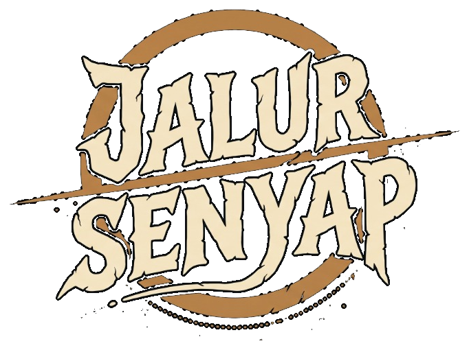
ARSIP KANON · ERA TAHUN KE-103 POST-SENYAP
Kumpulan lengkap sejarah, peta wilayah, budaya Lima Bangsa, perlengkapan & pusaka lintas bangsa, rahasia Perunggu Gaung & Echoes, profil tokoh, alur Bab 0–5, hingga glosarium resmi.
Coba kata kunci lain (misalnya: Nara, Lulanai, Salkara, Bejana Batu, atau Tahun 103).
“Seratus tiga tahun setelah Hari Senyap membungkam seluruh benua, seorang perintis kafilah muda bernama Nara menerima sebuah Cincin Perunggu kuno yang diam-diam menyetrum jarinya—membawanya ke tengah perebutan kekuasaan antara Dewan Tetua yang memonopoli jalur, serbuan klan berkuda utara yang kelaparan, dan seorang penyintas Lulanai bernama Maruani yang ingin menundukkan kelima bangsa di bawah kekuatan getaran purba.”
Kehancuran hubungan dagang antara Cirusia dan Bahtari sejak Perang Tujuh Musim membuat Cirusia kehabisan lada biru pengawet daging, memicu blokade dan serbuan ke pos-pos garam Asharim.
Dewan Tetua di Benteng Tata menguasai tujuh Menara Simpul Redup, menarik pajak gerbang serta mata uang Keping Tata, sementara Bejana Batu di bawah laut perlahan retak karena pemakaian paksa.
Pertarungan prinsip antara Nara (keturunan Lulanai yang tak tahu asal-usul darahnya) dan Maruani (arsitek diaspora Lulanai yang hendak memaksa seluruh bangsa berlutut dengan Nada Pengikat).
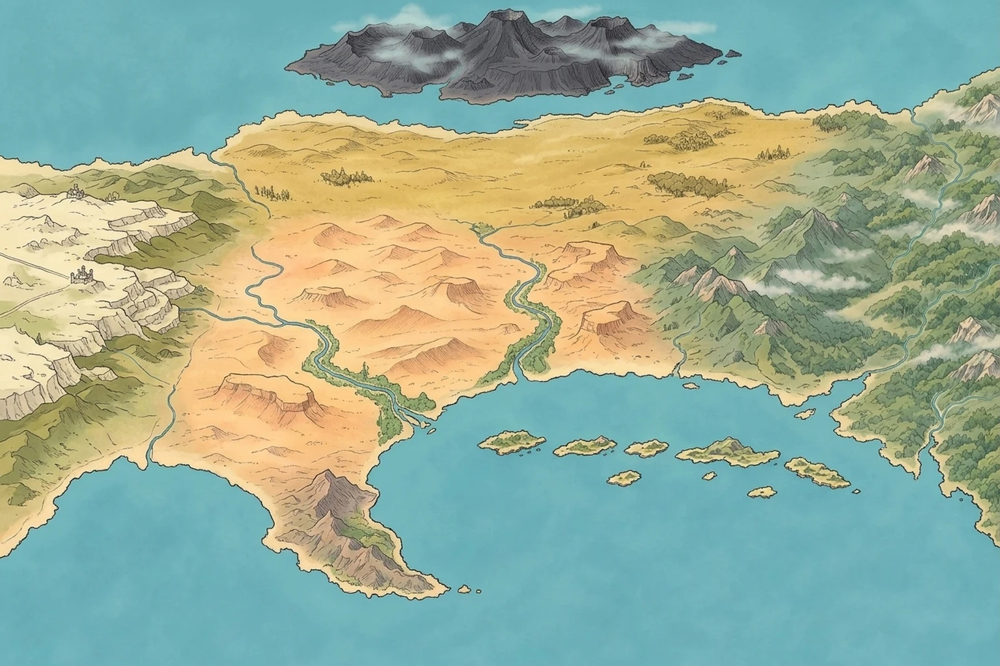
Klik peta untuk memperbesar. Sebaran 5 wilayah bangsa: Asharim (Barat), Cirusia (Utara), Tseren (Timur), Bahtari (Selatan), Lulan Tua (Pusat), dan Benteng Tata (Barat Daya).
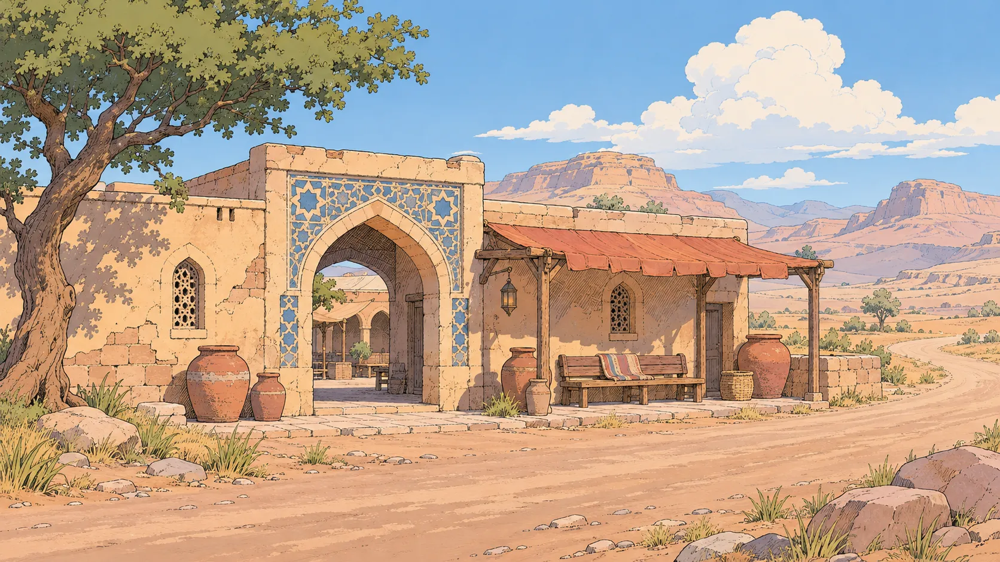
Pos singgah tua berkubah biru pimpinan Marsiyah dari Kubu Pos Tua. Pusat karavan garam, tempat menyimpan Tas Peredam Tseren Sahdan & Cincin Perunggu, serta dapur pembagi Roti Hangat Nilasar.
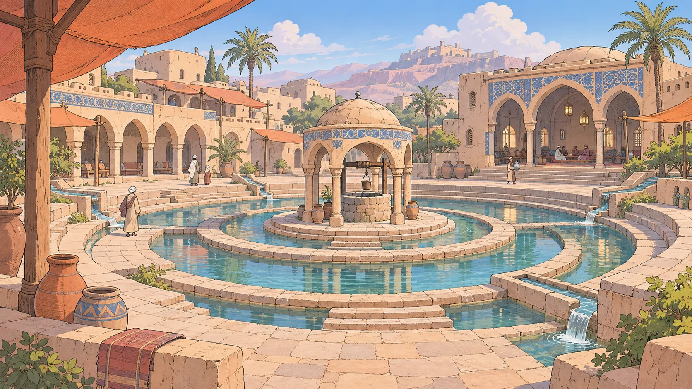
Kompleks teras air pirus tempat saluran bawah tanah buatan Lulanai mulai beriak aneh akibat tekanan Bejana Batu.
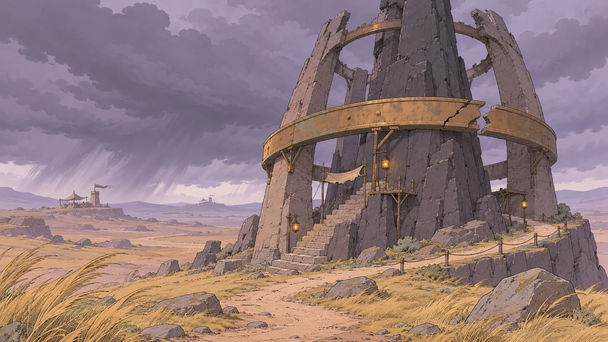
Pos pengamat tempat Lentera Angin & Peluit Ruru dikalibrasi, catatan Ban Jumel mengungkap jejak Tas Peredam Sahdan, serta Menara ke-9 mengunci Cincin Perunggu pada nadi Nara.
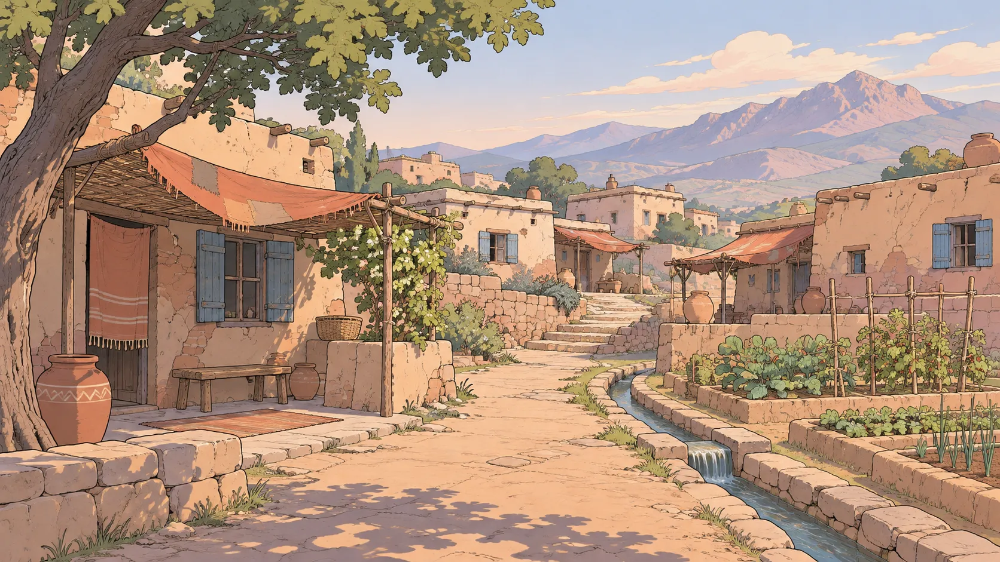
Kampung halaman Nara yang sesak pengungsi garam; tempat Nenek Ima menyimpan rahasia Penutup Telinga Perunggu dan menenun Selendang Tenun Sela penahan arus kanal.
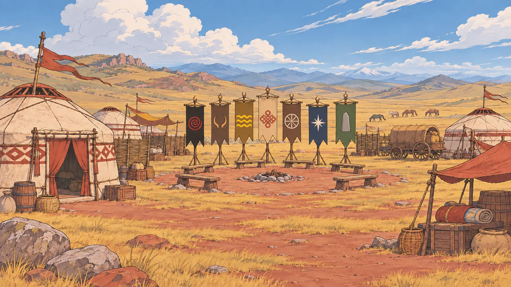
Jantung perkemahan konfederasi berkuda Tujuh Panji mengelilingi api sidang dan monolit Batu Nama; tempat pembagian ransum Kapsul Garam Balkut dan pengesahan Meterai Penengah Salkara.
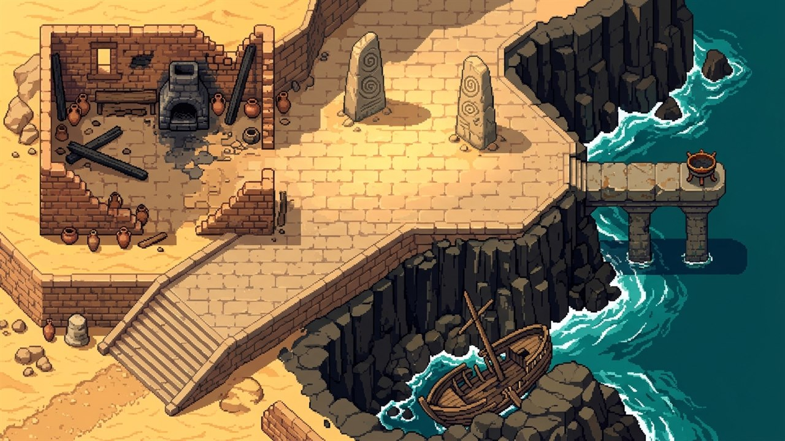
Teluk terlarang tempat batu pesisir masih mengulang teriakan dan nyanyian malam kebakaran 107 tahun silam.
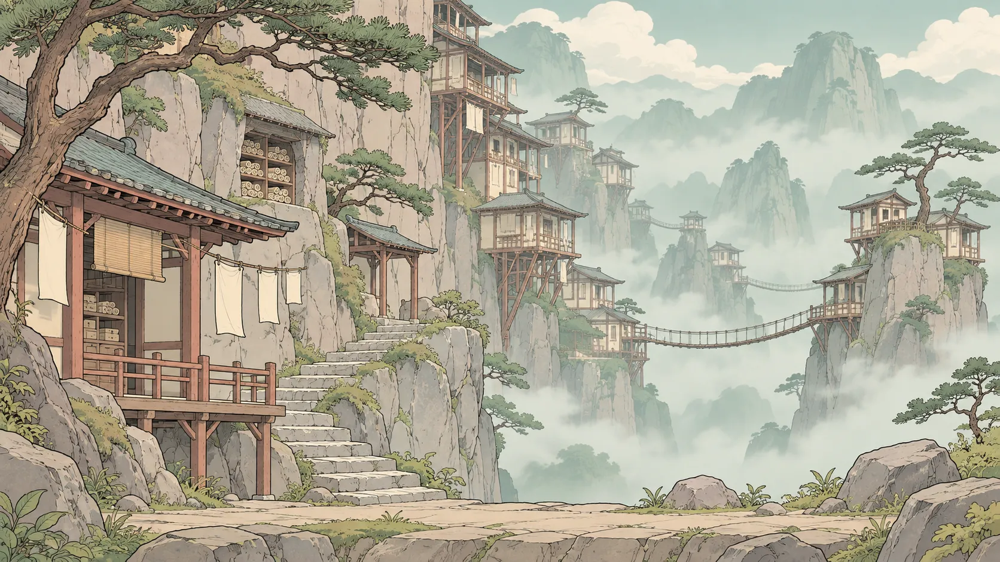
Pegunungan berkabut dengan jembatan tali dan arsip kertas serat tempat keaslian naskah Ikrar Sambung tersimpan.
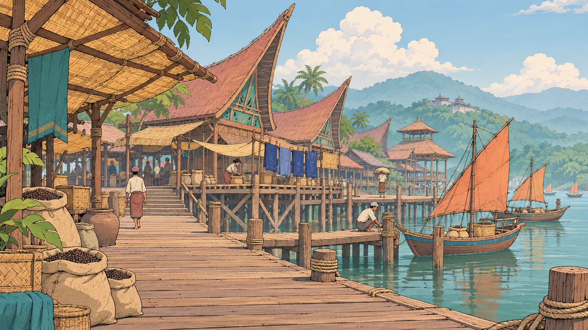
Bandar maritim ramai tempat rempah lada biru, garam laut, dan jeratan kontrak Utang Kabar menahan para pelaut.
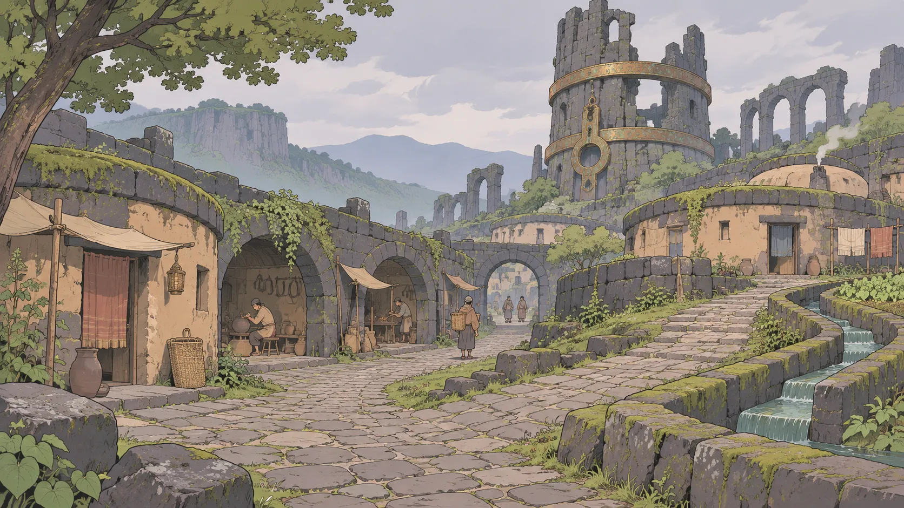
Tanah leluhur arsitek Lulanai berbatu basalt sunyi, menyimpan separuh kode kedua (Nada Penyegel) dan tiga faksi penyintas.
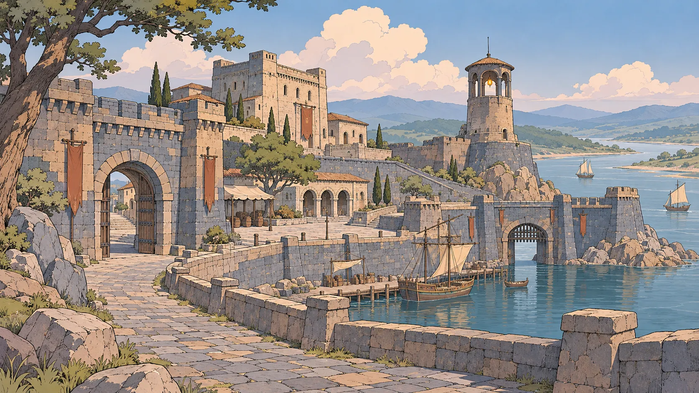
Markas Dewan Tetua yang mengunci muara sungai kembar Asharim serta pintu barat selat Bahtari.
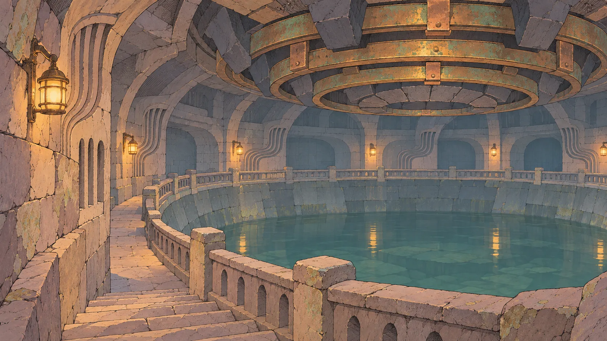
Pulau suci di atas ruang batu bawah laut Bejana Batu tempat seluruh gema liar Hari Senyap dialirkan dan dikunci.
| Unsur | Rincian Kanon |
|---|---|
| Apa | Penemuan sifat akustik Batu Gaung vulkanik, penciptaan metalurgi Perunggu Gaung, dan pembangunan jaringan 99 Menara Simpul sebagai pertukaran teknologi dengan pangan. |
| Siapa | Ikatan Arsitek Lulanai, puncaknya melahirkan 5 Arsitek Pembangun Peradaban. |
| Di Mana | Dataran tinggi kaldera Lulan Tua (pusat Tanah Sada), kaya tembaga-timah-basalt namun tandus dan miskin pangan. |
| Kapan | ~512 Pra-Senyap (awal Batu Gaung), 397 Pra-Senyap / TS 1 (Menara ke-1), hingga 243 Pra-Senyap (99 menara selesai). |
| Mengapa | Agar tidak kelaparan di kaldera batu, Lulanai membangun infrastruktur air, arsip, pelabuhan, & menara komunikasi—ditukar pasokan pangan, kertas, dan minyak dari empat bangsa lain. |
| Bagaimana Konfliknya | Jaringan punya batas Beban Gaung; bila jenuh akan melepaskan Bising perusak pendengaran. Agar nilai tukar menara tak jatuh, para pendiri Lulanai menyembunyikan bahaya Bising dan melarang ekspor Perunggu Gaung. |
| Tahun | Era & Peristiwa |
|---|---|
| ~512 Pra-Senyap | Awal pemanfaatan Batu Gaung & penciptaan Perunggu Gaung di Lulan Tua. |
| 487–418 Pra-Senyap | Lahirnya empat peradaban lain: Bahtari (~487–436), Asharim (~453), Tseren (~432), Cirusia (~418). |
| 397 Pra-Senyap (TS 1) | Menara Simpul ke-1 berdiri; dimulainya Zaman Pembukaan Jalur. |
| 243 Pra-Senyap | Seluruh 99 Menara Simpul rampung (*Zaman Echoes*). |
| 124 Pra-Senyap | Dewan Tetua didirikan oleh perwakilan 5 bangsa di Benteng Tata lewat Ikrar Sambung. |
| 43 Pra-Senyap | Zaman Kabar Palsu: spekulan menyuap petugas menara untuk memanipulasi harga pasar. |
| 4 Pra-Senyap | Kebakaran gudang Panji Gorkan & karamnya kapal Bahtari di Tepi Salkara memicu Kabar Tujuh Musim lalu Perang Tujuh Musim (~3,5 tahun). |
| Tahun 0 (TS 398) | Hari Senyap (*Malam Tiga Napas*): Wilanu menempa Cincin Perunggu, Sahdan membawanya keluar lalu kembali jadi jangkar, 5 Arsitek Agung gugur memutus 99 menara, dan 37 arsitek muda cacat oleh Bising. |
| 1–35 Post-Senyap | Komunikasi menara padam. Dewan Tetua menghapus kursi Lulanai, menuntut lewat Perkara Pemutusan, dan menyebar stigma Bising Menular. |
| 36–53 Post-Senyap | Persekusi penyintas Lulanai; Aliran Selaras di Tseren menyunting salinan sejarah demi keabsahan Dewan. |
| 54 & 58 Post-Senyap | Arsitek Hemira menjual catatan tak lengkap (Thn 54). Dewan menyalakan 7 Menara Simpul Redup (Thn 58) yang perlahan meretakkan Bejana Batu; Hemira merekam peringatan dekat 009. |
| 72, 86, 97 Post-Senyap | Marsiyah jadi penjaga ke-4 cincin (Thn 72); Nara lahir dari Tarun & Nadiyah di Dusun Sela (Thn 86); Tarun tertahan kontrak di Bandar Lada (Thn 97). |
| 101–103 Post-Senyap | Bejana Batu menekan padang Cirusia hingga sumur membeku lebih awal; pajak garam naik; Menara 009 memancarkan tiga denyut tanda bahaya—petualangan Nara & Ruru dimulai. |
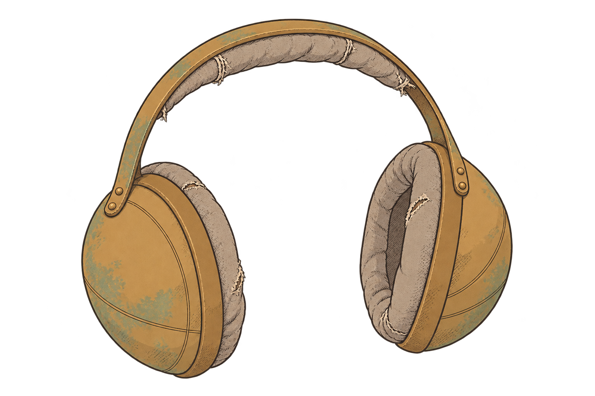
Paduan tembaga vulkanik, timah hitam, kuarsa-basalt, dan bubuk murni Batu Gaung yang dilebur sambil mengikuti frekuensi suara arsitek (Tempa Nada). Menjadi bahan Cincin Arsitek, Garpu Tala, Penutup Telinga Perunggu, dan Cincin Perunggu.
Aturan Kunci Nadi: Cincin Perunggu hanya menyetrum darah keturunan Lulanai. Begitu diaktifkan di Menara Simpul ke-9 oleh Nara, cincin terkunci permanen pada satu detak nadi tersebut—bila direbut paksa oleh orang lain termasuk Maruani, cincin kembali mati.
Arsitek berpendengaran utuh dengan alat Perunggu Gaung sanggup memancarkan getaran terfokus melalui batu dan tanah: mendeteksi langkah kuda dari jauh, meretakkan tebing lapuk, membuka pintu basalt tanpa engsel, serta mengguncang keseimbangan cairan telinga lawan hingga berlutut.
Suara Echoes tidak diam di satu titik—ia merambat dan bisa bocor melewati jaringan bawah tanah Garis Surut (dari Menara 1 → 9 → 99) saat tekanan Bejana Batu meningkat.
Karena Dewan Tetua sejak Tahun 58 mengoperasikan 7 menara memakai perunggu tiruan tanpa peredam asli, beban balik terus menggerogoti Bejana Batu di bawah laut dan menimbulkan gejala ganjil di enam kawasan:
| Kawasan | Gejala Tekanan Tahun ke-103 Post-Senyap |
|---|---|
| Menara Simpul ke-9 | Tiga denyut lentera kuning pekat tanpa penyetelan; cincin perunggu raksasa retak. |
| Telaga Sumi | Air sumur beriak melingkar tanpa angin; dengung rendah & bisikan dari terowongan Urat Sumi. |
| Padang & Tepi Salkara | Monolit Batu Nama dan batu pesisir mengulang suara kebakaran 107 tahun lalu; sumur membeku lebih awal. |
| Pegunungan Silin | Tinta gaung pada naskah arsip memperlihatkan tulisan lama yang pernah dihapus. |
| Kepulauan Lamuna | Kerang suara tua bergetar dan bernyanyi sendiri tanpa disentuh. |
| Lulan Tua | Menara Simpul ke-1 berdengung sendiri di balik kabut kaldera. |
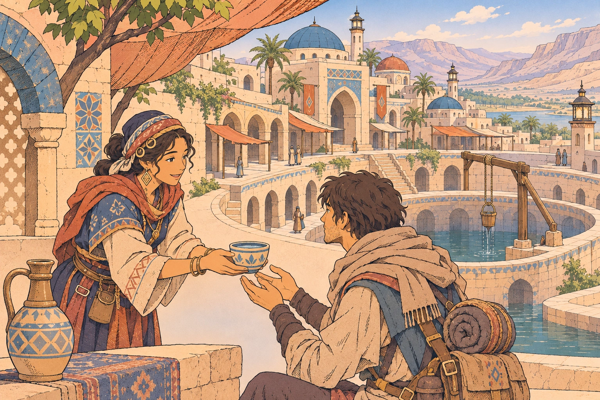
“Air tidak bertanya nama.”
Wilayah & Peran: Lembah Pasir, Telaga Sumi, Pos Nilasar, Menara Senja, Dusun Sela. Penguasa jalur transit darat & tambang Garam Batu Batangan (satuan Garis).
Kepercayaan & Adat: Menyembah nilai Sang Mata Air dengan Pakta Sumur Terbuka (mata air zona damai mutlak). Tamu disambut lewat adat Malam Tiga Cawan (Air untuk kabar rute, Garam untuk pasar, Kabar untuk cerita) serta Buku Tamu Batu.
Kerajinan & Perlengkapan Jalur: Memasok gandum gurun panggang (Roti Hangat Nilasar), kain tenun badai Dusun Sela (Selendang Tenun Sela), garam tambang campuran tebing (Kapsul Garam Balkut), serta kulit samak gurun untuk Rompi Kulit Kafilah.
Perpecahan: Kubu Pos Tua (Marsiyah, netral) vs Kubu Pos Dagang (menyerahkan daftar tamu ke Dewan Tetua demi keringanan pajak).
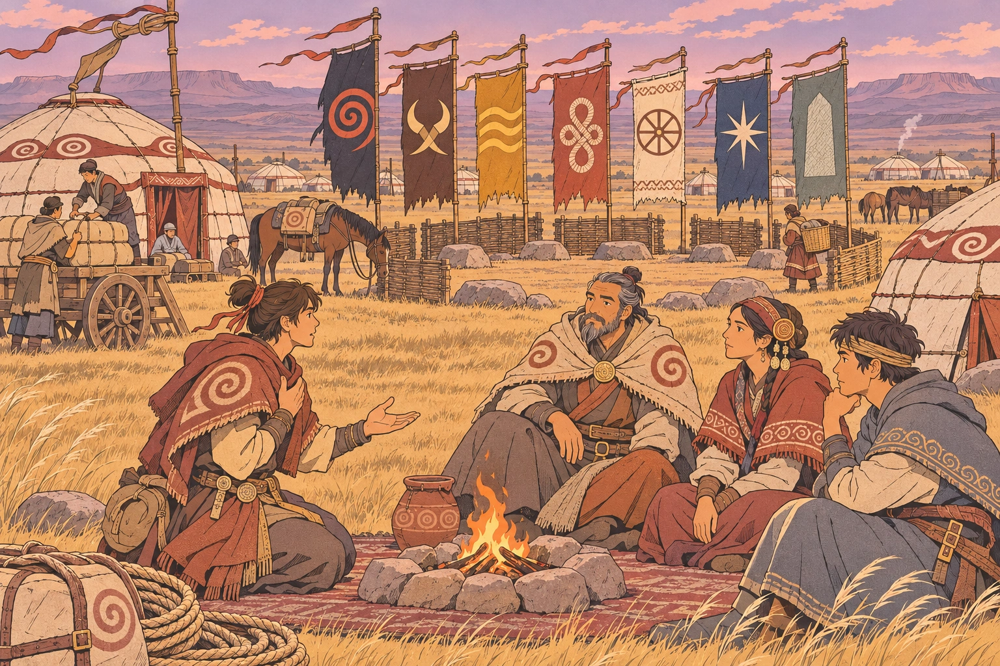
“Bohonglah di depan api, kalau berani.”
Wilayah & Peran: Padang Salkara (47 tenda kempa) & teluk Tepi Salkara. Konfederasi 7 klan nomaden berkuda pemasok ternak, wol, kain kempa, dan pengawalan karavan berat.
Kepercayaan & Adat: Sumpah lisan di bawah Hukum Janji Api dan tiga saksi mata—pantang menulis janji adat. Mengukir nama gugur di monolit Batu Nama dan melepas kafilah lewat upacara Memanggil Angin.
Kerajinan & Mandat Jalur: Jahitan kulit lapis tiga pelindung angin padang (mengilhami Rompi Kulit Kafilah), ransum karavan tebing Kapsul Garam Balkut milik Panji Balkut, serta Meterai Penengah Salkara berukir monolit Panji Kadum yang menahan patroli di jalur sengketa.
Titik Buta Sejarah: Menyimpan amarah atas Kabar Tujuh Musim demi menutupi rasa malu Adat Muka Api atas kelalaian Panji Gorkan 107 tahun lalu.
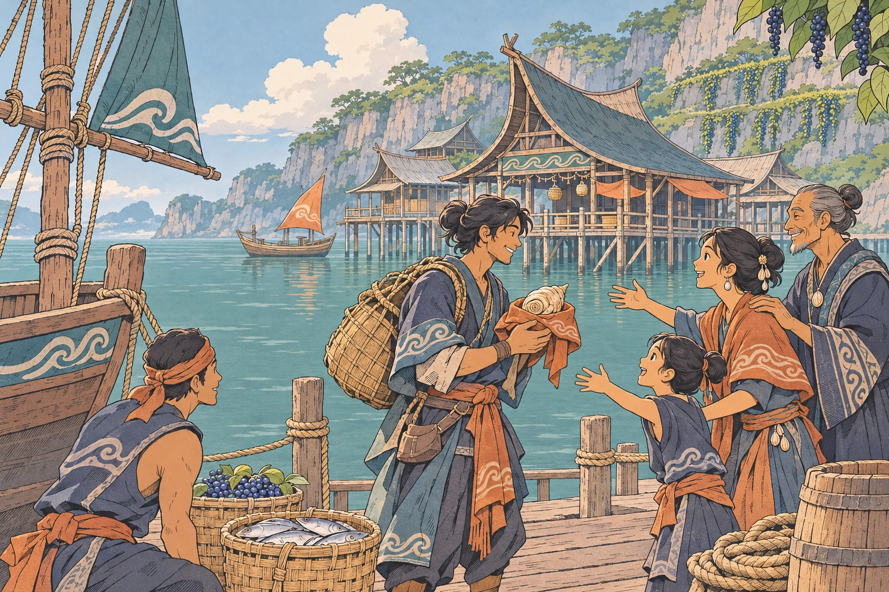
“Pasang selalu kembali.”
Wilayah & Peran: Kepulauan Lamuna & Bandar Lada. Pelaut samudra, penemu peta 3D Bagan Arus, pemasok Lada Biru Tebing, garam laut, serta Minyak Ikan Palung untuk lentera seluruh benua.
Kepercayaan & Adat: Menghormati Sang Pasang lewat Lagu Titipan, Kerang Suara, dan profesi Pembawa Lagu.
Kaitan Perlengkapan: Minyak Ikan Palung Bahtari tidak mudah menguap di gurun Asharim dan menjadi bahan bakar utama Lentera Angin & Peluit Ruru yang disita Kesa di Gerbang Timur dan disabotase di Salkara.
Perpecahan: Rumah Dagang (pemilik modal yang menjerat pelaut lewat Utang Kabar & Kontrak Sauh) vs Rumah Layar (serikat nakhoda & penyelam).
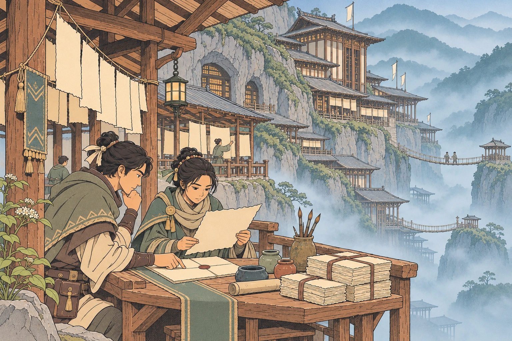
“Tinta tak pernah lupa.”
Wilayah & Peran: Pegunungan Silin (*Kabut Lirih*), Desa Kertas Awan, dan Rumah Naskah. Produsen kertas serat tahan lembap, tinta mineral, benang peredam gaung, Jubah Layar, & Cakar Tebing.
Kepercayaan & Adat: Menjunjung Kanon Aksara (pantang memusnahkan satu huruf pun), adat Dua Pembacaan saat serah-terima, serta Tinta Kelahiran.
Kaitan Perlengkapan: Benang tenun peredam gaung khas Silin melapisi bagian dalam Tas Peredam Tseren yang dipakai Sahdan—dan kelak Nara—untuk membungkam gema Cincin Perunggu serta menahan badai pasir.
Perpecahan: Aliran Murni (menjaga naskah asli apa adanya) vs Aliran Selaras (menyunting arsip sejarah demi stabilitas bersama Dewan Tetua).
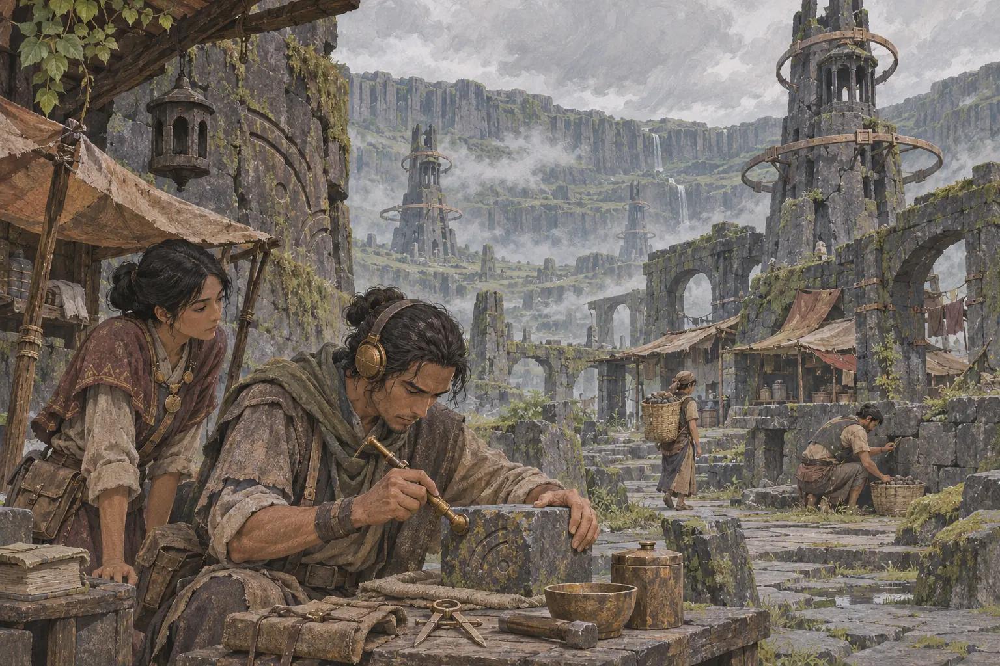
“Dengar dan resapi.”
Wilayah & Sejarah: Kaldera basalt Lulan Tua. Pemahat dan ahli metalurgi pembangun peradaban 99 Menara Simpul yang diburu setelah Hari Senyap akibat tuduhan Perkara Pemutusan & fitnah Penelan Suara.
Adat & Warisan Benda: Jeda Tiga Napas Hening, pesan Tanda di batu, Penutup Telinga Perunggu, Cincin Perunggu tempaan Wilanu, serta motif serat pelindung penyintas yang disamarkan Nenek Ima ke dalam Selendang Tenun Sela.
Tiga Faksi Tersembunyi: Kaum Pantang (Mairuma), Kaum Terbuka (Ruania), dan Kaum Sesal (Lunaia).
Didirikan tahun 124 Pra-Senyap di Benteng Tata lewat Ikrar Sambung oleh 5 bangsa—lalu menghapus kursi Lulanai pasca-Hari Senyap. Dipimpin Yang Tetua (Taluk) di bawah slogan “Yang tua menjaga jalan.”
Ekonomi Jalanan: Keping Tata (koin Dewan untuk pajak gerbang, nilainya merosot), Garam Batu Batangan (standar bebas), & barter strategis lintas bangsa.
Aturan Keenam Perintis: Pembawa kabar terikat kejujuran rute—dan berhak memperingatkan penerima bila meragukan keaslian kontrak yang dibawanya.
| Panji | Pemimpin | Lambang & Peran | Sikap Politik |
|---|---|---|---|
| Panji Gorkan | Dargun, si Bara (±62) | Spiral merah pada hitam; jadwal sidang & api | Panji Tua · mewarisi rahasia Tepi Salkara |
| Panji Dolgak | Hurgak, si Tanduk Besi (±50) | Sepasang tanduk perunggu; kavaleri berat | Panji Tua · menekan perbatasan selatan |
| Panji Sarbuk | Kutlak, si Angin Debu (±58) | Tiga gelombang kuning; pengintai jalur | Panji Tua · curiga kepada pihak luar |
| Panji Balkut | Salgur, si Tali Panjang (±38) | Simpul tali terakota; kargo & jembatan (panji Orsuk) | Panji Muda · pragmatis & mendukung dagang |
| Panji Tumran | Borlan, si Roda Kempa (±45) | Roda bersulam putih; kemah, wol, pengawetan | Panji Muda · amat butuh garam & lada biru |
| Panji Ulmar | Burgul, si Bintang Rendah (±30) | Bintang putih pada biru gelap; navigasi malam | Panji Muda · menolak penutupan jalur |
| Panji Kadum | Odgar, si Batu Nama (±75) | Monolit abu-abu; pengesah sumpah & daftar gugur | Penengah (Suara ke-7) · penentu akhir sidang |
Seluruh perlengkapan di Tanah Sada memadukan keahlian kelima bangsa dan langsung aktif otomatis begitu diperoleh Nara sesuai alur bab—memengaruhi cara bertahan di badai pasir, pindai medan Ruru, bahaya alam, patroli musuh, hingga konfrontasi taktis.
Asal & Cerita: Kulit samak gurun Dusun Sela yang mengikuti jahitan pelindung lapis tiga penunggang perintis Cirusia—pelindung harian Nara menempuh jalur tebing.
Efek Gameplay: Menambah +5 Ketahanan, +2 Ketangkasan, dan +2 Pertahanan secara permanen.
Asal & Cerita: Tas bergesper kuningan peninggalan Sahdan (tercatat di buku harian Ban Jumel) berlapiskan benang peredam gaung Tseren dari Silin untuk membungkam getaran benda Perunggu Gaung Lulanai.
Efek Gameplay: Memangkas dorongan angin luar ruangan 45% dan memperlambat susut muatan akibat badai pasir hingga 55% lebih awet.
Asal & Cerita: Menyala memakai Minyak Ikan Palung Bahtari yang tidak cepat menguap di terik Asharim, dipadu peluit batu berfrekuensi tinggi yang dikalibrasi untuk Ruru di lereng Menara Senja.
Efek Gameplay: Memperluas radar [Q] Ruru (170 → 220 px), mempercepat jeda pindai (4 → 2,5 dtk), dan memperkuat Siasat Ruru di combat (1.45x).
Asal & Cerita: Ditempa Wilanu dari pahat 5 Arsitek Agung; diuji Marsiyah pada tangan Nara dan terkunci permanen pada detak nadinya di kaki Menara Simpul ke-9.
Efek Gameplay: Membuka gerbang Simpul ke-9 dan menggandakan durasi garis penuntun [Q] (8 → 14 dtk). Usai terikat nadi, meringankan Negosiasi (-2) dan memulihkan +3 HP tiap memilih Baca Celah.
Asal & Cerita: Tenunan Nenek Ima setelah membuka rahasia lantai alat tenun—corak gurunnya menyamarkan pola serat penyintas Lulanai sebagai pelindung perintis di kanal timur hingga tebing Salkara.
Efek Gameplay: Memangkas dorongan rintangan alam Bab 1 hingga 50%, membatasi damage jebakan maksimal 1 HP, serta menambah +10 Ketahanan, +5 Ketangkasan, +5 Pertahanan, dan +4 Kepekaan.
Asal & Cerita: Lencana berukir monolit Panji Kadum yang disahkan Odgar di depan api Sidang Tujuh Panji dengan penjaminan Orsuk sebagai mandat gencatan senjata 4 hari menuju Tepi Salkara.
Efek Gameplay: Memperlambat kewaspadaan patroli musuh sebesar 30% saat memergoki Nara serta menambah +7 Ketangkasan, +4 Pertahanan, dan +6 Kepekaan.
Asal & Cerita: Roti gandum gurun berempah ringan dari dapur suaka Pos Nilasar—simbol adat keramahan Air tidak bertanya nama di tengah blokade lada selatan.
Efek Gameplay: Memulihkan +12 Ketahanan (HP) saat bertarung atau melalui jurnal perlengkapan.
Asal & Cerita: Campuran Garam Batu Batangan Asharim dan ransum lemak-rempah Panji Balkut untuk menahan dehidrasi tebing Remuz–Zamer hingga Padang Salkara.
Efek Gameplay: Memulihkan +24 Ketahanan (HP) untuk menopang pertarungan berat di wilayah Bab 1.
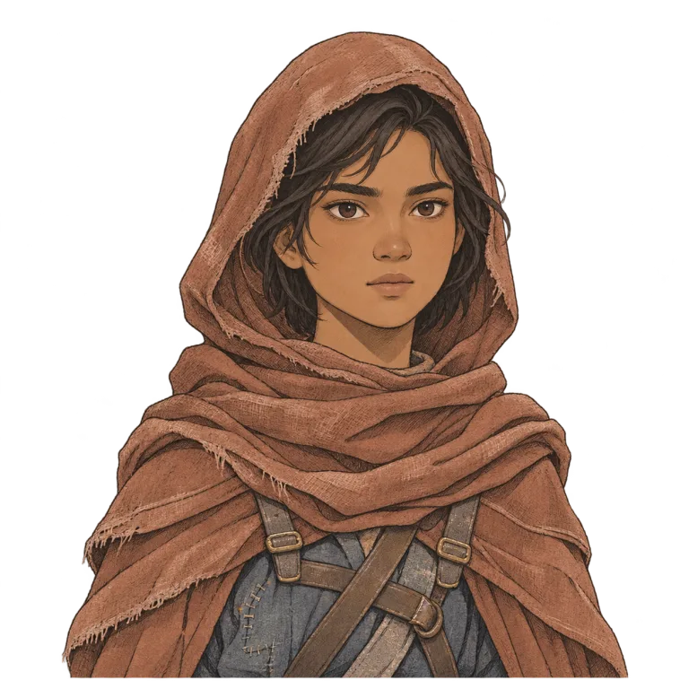
Protagonis · Perintis Kafilah Dusun Sela
Putri nakhoda Bahtari (Tarun) dan mendiang Nadiyah. Menabung garam demi mencari ayahnya ke selatan tanpa tahu darah Lulanai mengalir di nadinya.
“Tasnya aman kok, Bu. Cuma tadi waktu di tebing, cincin ini kayak... nyetrum lagi.”
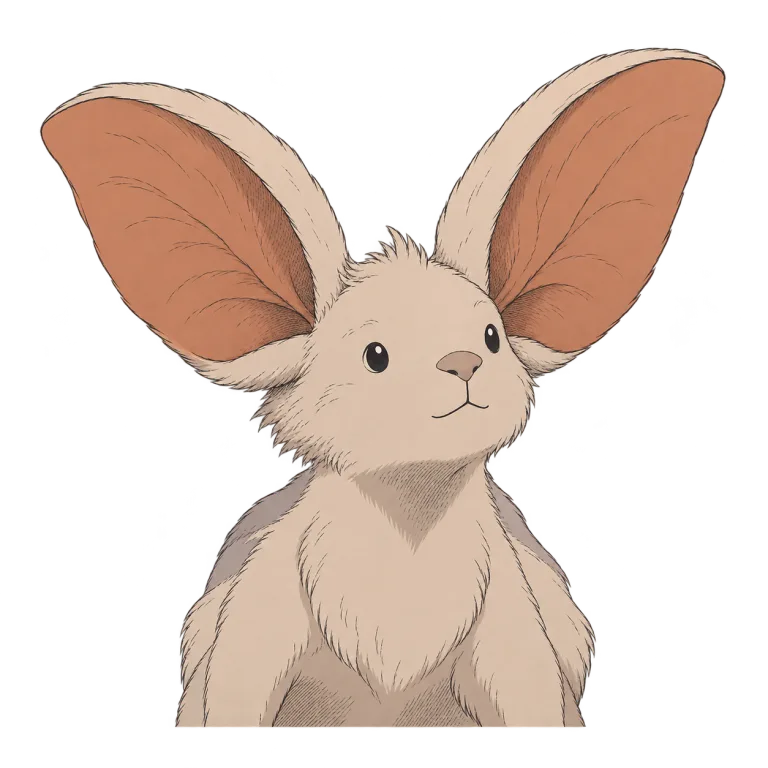
Satwa Gurun Pendamping
Hewan kecil berpendengaran tajam yang peka terhadap rongga pasir hisap, kemiringan lereng, dan getaran batu gaung.
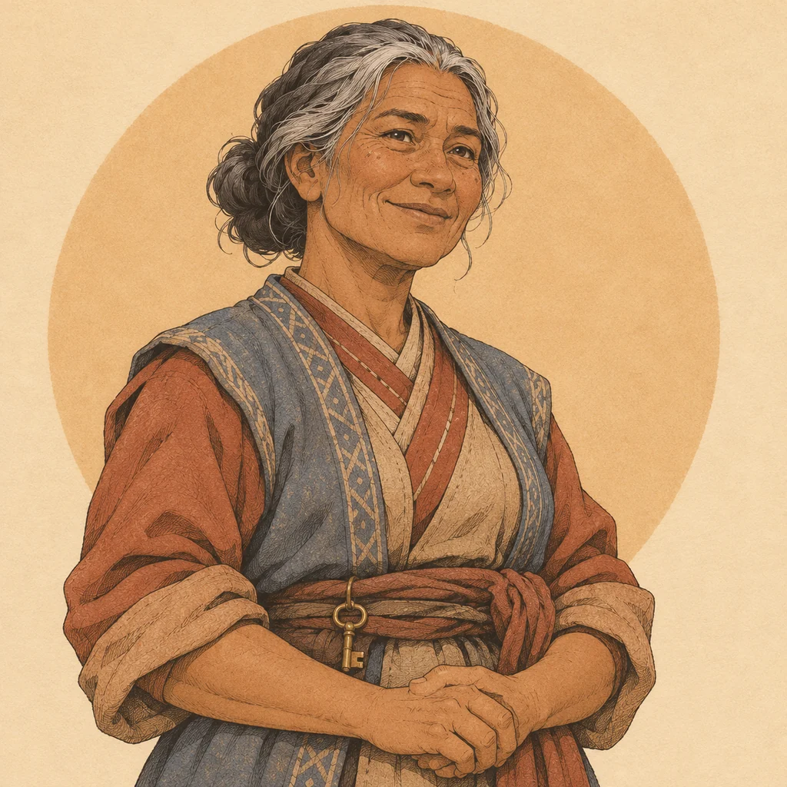
Kepala Pos Nilasar · Penjaga Cincin ke-4 (sejak Thn 72)
Meneruskan rantai penjaga Saryel → Azhel → Ilyam → Marsiyah selama 31 tahun. Menguji jari Nara dengan Cincin Perunggu sebelum razia Dewan tiba.
“Air tidak bertanya nama, Nara. Tapi caramu menyembunyikan jari sudah menjawab semuanya.”
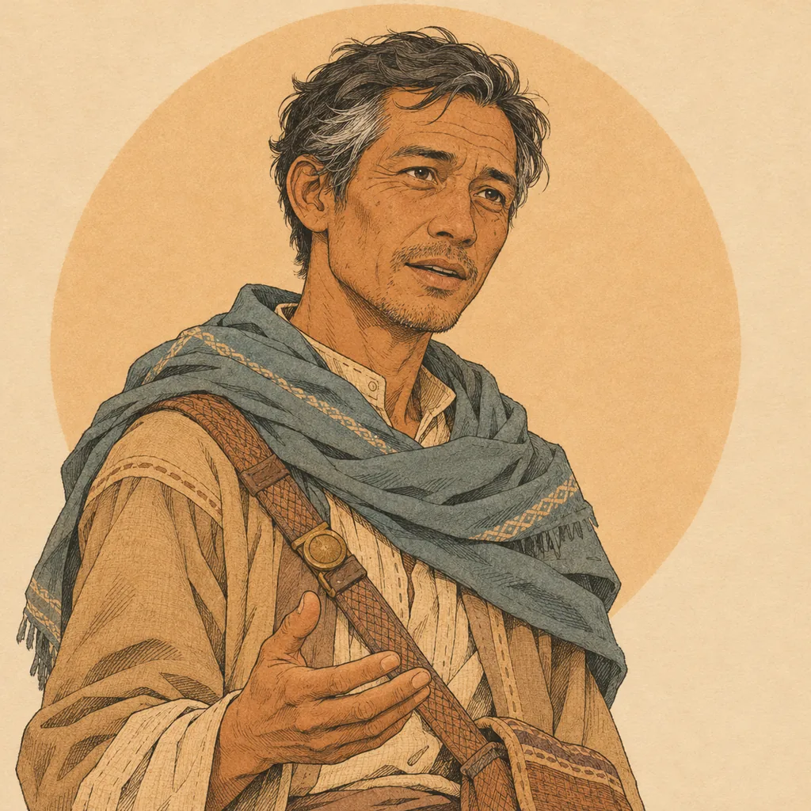
Perintis Agung Era Hari Senyap
Bukan orang Lulanai, namun dipercaya 5 Arsitek Agung menyelamatkan Cincin Perunggu ke Pos Nilasar lalu kembali menjadi jangkar di Menara ke-1.
Antagonis Utama · Arsitek Diaspora Lulanai
Berpendengaran utuh dan membawa garpu tala Perunggu Gaung asli. Tak bisa merampas cincin secara paksa dari nadi Nara, sehingga membujuk lewat rahasia kebenaran sejarah dan penyebab wafatnya Nadiyah.
“Dan kau—darah para arsitek—memilih merangkak di debu mereka?”
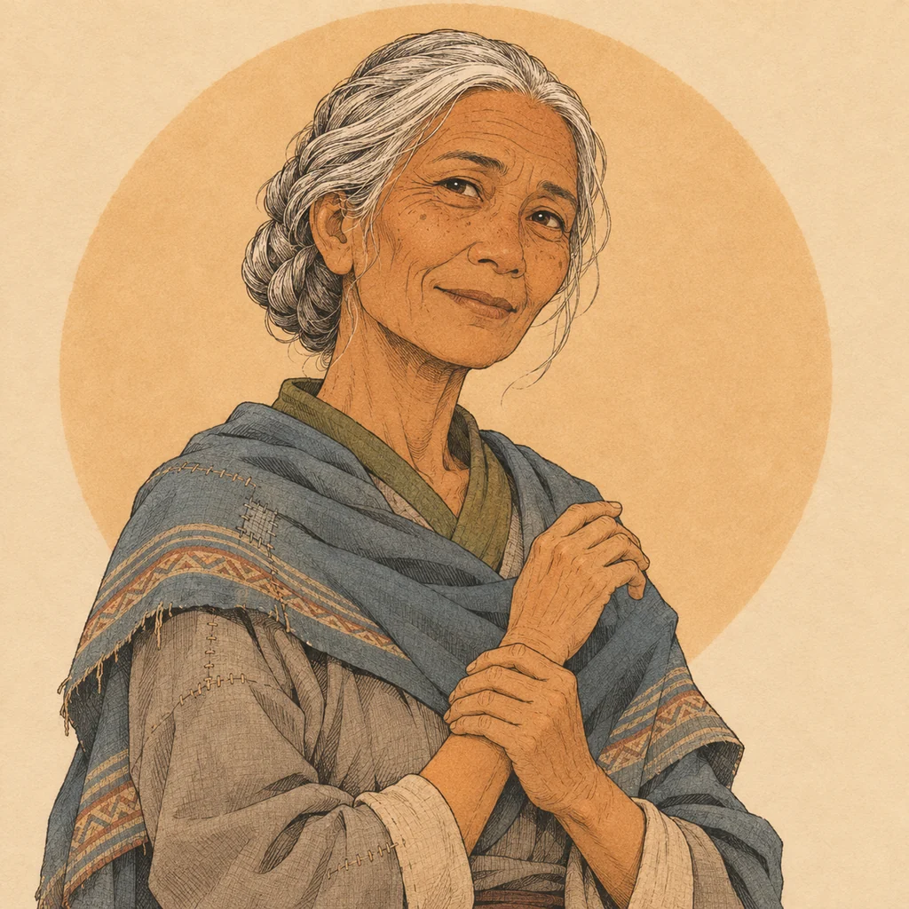
Penyintas Lulanai di Dusun Sela
Menyamar sebagai penenun Asharim untuk melindungi cucunya. Menyimpan Penutup Telinga Perunggu berukuran kecil di bawah lantai alat tenun.
“Makan dulu. Ada hal yang lebih baik kau dengar dari batu daripada dari mulutku, Nara.”
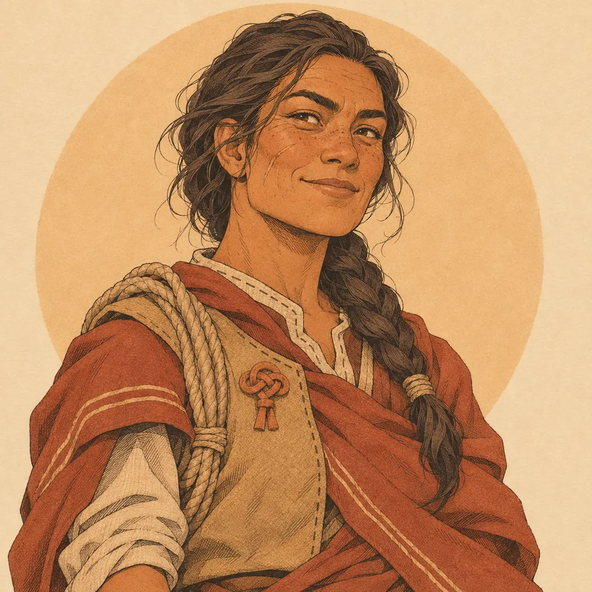
Kepala Pengawal Panji Balkut (Cirusia)
Rekanan paling tangguh Nara di Padang dan Tepi Salkara. Lugas, jujur, dan bersikeras menjaga jalur garam tetap damai.
“Kita bawa bukti dari Tepi Salkara dulu. Bohonglah di depan api, kalau berani.”
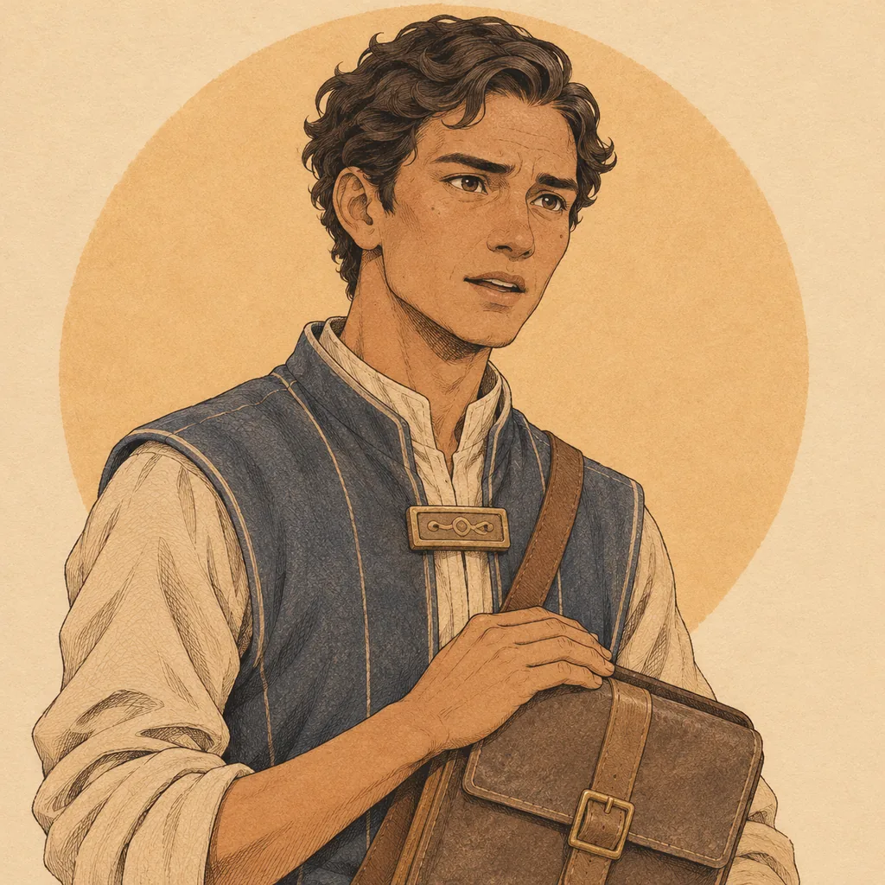
Komandan Muda Gerbang Timur
Perwira Dewan Tetua yang mulai goyah melihat kebijakan mencekik pedagang dan diam-diam membukakan gerbang utara bagi Nara.
“Ini jalur utara. Surat jalannya aku yang tanda tangani.”
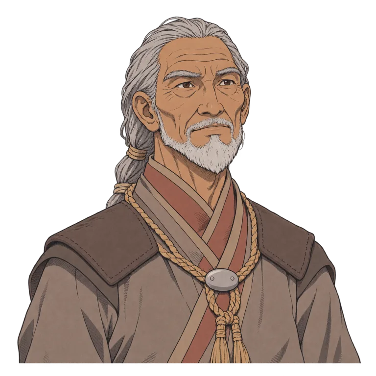
Pemimpin Panji Kadum (Suara ke-7)
Tetua pengukir nama gugur di Batu Nama dan pemegang suara penentu gencatan senjata di Sidang Tujuh Panji.
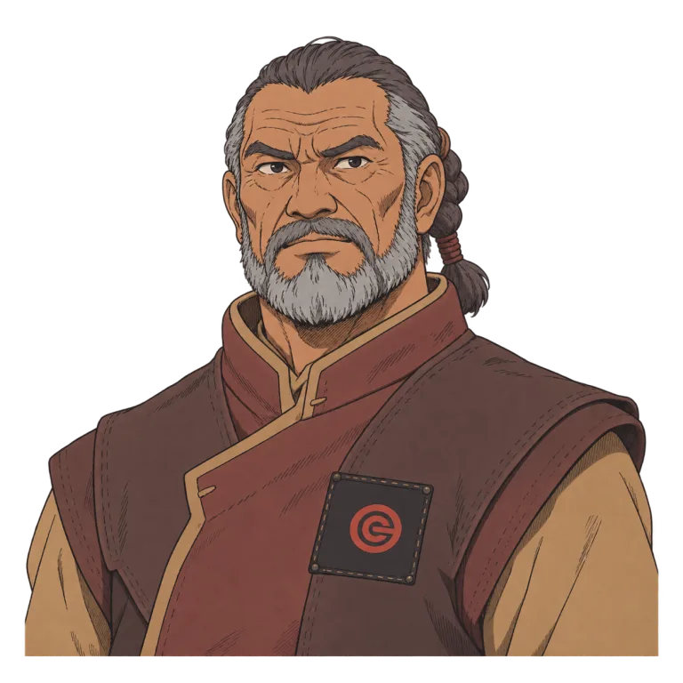
Dargun · Salgur · Hurgak · Kutlak · Borlan · Burgul
Enam suara yang terbelah 3 lawan 3 di Padang Salkara hingga bukti Tepi Salkara membongkar rahasia lama Panji Gorkan.
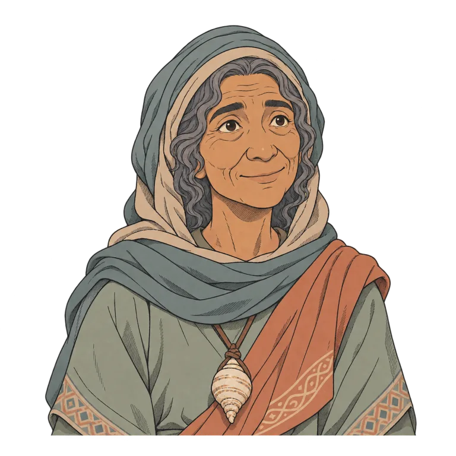
Penjaga Telaga Sumi & Menara Senja
Bu Lamit memantau saluran Urat Sumi sambil menunggu kabar suaminya (Tiwano); Pak Jumel mewarisi catatan kakeknya soal sosok Sahdan.
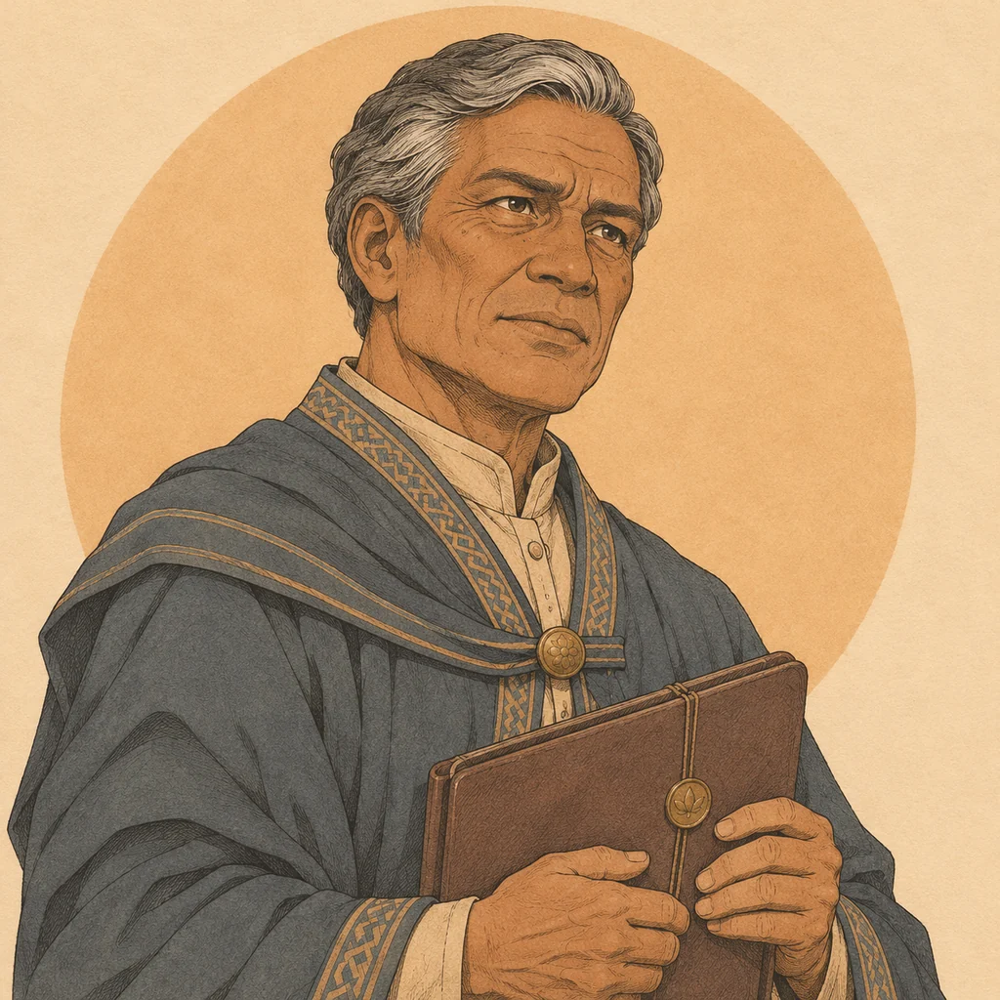
Pemimpin Tertinggi Dewan Tetua (Bab 3–5)
Berdarah campuran Asharim–Bahtari. Terobsesi menjaga ketertiban agar Perang Tujuh Musim tak terulang, meski lewat monopoli.
“Seumur hidupku aku menjaga agar jeritan Perang Tujuh Musim tak terulang. Yang tua menjaga jalan.”
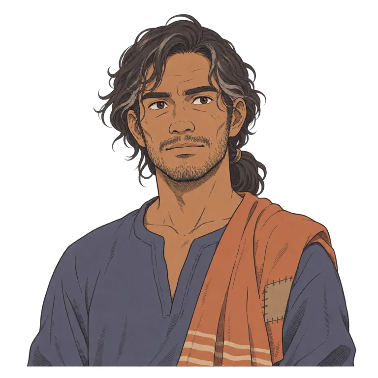
Pelaut Rumah Layar Bahtari (Bab 3–5)
Ayah Nara (Tarun) ternyata terjebak Utang Kabar di Bandar Lada demi mencari keluarga awak kapalnya; Tiwano membantu memulangkannya.
Arsip Tseren & Arsitek Lulanai (Bab 2 & 4)
Wuren mengungkap suntingan naskah Ikrar Sambung; rekaman Wilanu, Dalumi, & Hemira menyingkap kebenaran teknis Hari Senyap dan 7 menara redup.
Pos Nilasar terhimpit blokade garam & razia Kesa. Memakai Rompi Kulit Kafilah dengan bekal Tas Peredam Tseren dan Roti Hangat Nilasar, Nara memeriksa riak aneh Telaga Sumi dan mengalibrasi Lentera Angin & Peluit Ruru di Menara Senja. Di tengah badai pasir besar, Menara Simpul ke-9 memancarkan tiga denyut tanda bahaya; Marsiyah menguji lalu menyerahkan Cincin Perunggu yang kemudian terkunci pada detak nadi Nara di Simpul 009—diawasi dari bukit oleh Maruani.
Pulang ke Dusun Sela, Nara mengetahui rahasia Penutup Telinga Perunggu dari Nenek Ima dan dibekali Selendang Tenun Sela penahan arus kanal & angin tebing. Bersama pengawal Panji Balkut Orsuk (dan bekal Kapsul Garam Balkut), Nara membujuk tujuh ketua panji di Padang Salkara hingga memperoleh Meterai Penengah Salkara dari Odgar, membongkar sabotase minyak Bahtari suruhan Maruani, lalu menyelidiki pesisir Tepi Salkara hingga Dargun mengakui kelalaian Panji Gorkan dan gencatan senjata disahkan.
Menembus jurang Silin bersama Wuren, Nara membuktikan bahwa naskah Perkara Pemutusan diubah oleh Aliran Selaras (kewajiban “memberi tahu” diubah menjadi “meminta izin”), serta menemukan catatan Hemira mengenai peta Menara Simpul ke-1 dan ancaman 7 Menara Redup.
Usai menyaksikan pratinjau lonjakan gaung di lereng selatan, Nara bertemu kembali dengan ayahnya Tarun yang tertahan kontrak Utang Kabar. Pengakuan Cirusia meredakan ketegangan dengan Bahtari; Nara menolak tawaran suaka bersyarat Taluk dan berlayar menuju Lulan Tua.
Di Menara Simpul ke-1, ketiga kaum Lulanai memberi izin menyatukan Nada Penyegel ke dalam cincin. Nara menolak ajakan paksa Maruani meski diungkap penyebab wafatnya Nadiyah. Di pelataran Benteng Tata bersama Kesa sebagai pengawal utusan sah, bukti arsip memaksa Taluk menyepakati penghentian 7 Menara Redup dan membuka jalan ke Menara ke-99.
Di ruang bawah laut Bejana Batu, upaya terakhir Maruani memaksakan Nada Pengikat digagalkan oleh Nara dan para saksi lintas bangsa. Kini Nara menentukan sendiri cara melepaskan seluruh gema dunia di Gerbang Surut.
| Pihak / Dampak | 1. Terbuka (Tanpa Penjaga) | 2. Terkendali (Dewan Tetua) | 3. Terverifikasi (Lintas Bangsa · Balanced) |
|---|---|---|---|
| Mekanisme & Harga | Seluruh beban Bejana dilepas sekaligus; kepekaan Nara utuh, tetapi beberapa menara rapuh retak & melukai warga. | Dewan melepaskan bertahap dan lambat; fisik benua aman, namun monopoli bertahan dan Taluk menebus utang Tarun. | Nara menyelaraskan pelepasan aman secara manual—mengorbankan kepekaan Echoes Nara secara permanen (pendengaran biasa utuh). |
| Lulanai & Nenek Ima | Keluar dari persembunyian, tetapi stigma warga masih tersisa. | Ajaran Tata tetap menyalahkan Lulanai; Ima tetap menyamar. | Suntingan arsip diakui resmi; Lulanai dilibatkan lagi; Ima mulai bicara terbuka. |
| Bangsa & Keluarga | Monopoli Dewan runtuh; spekulasi kabar hidup lagi. | Dewan berkuasa penuh dengan jalur dagang diawasi ketat. | Ikrar Sambung diperbarui untuk 5 bangsa; Tarun pulang bersama Nara ke Dusun Sela. |
Asharim: vokal a-i-u-e, akhiran -an/-am/-iyah (Marsiyah, Sahdan). Cirusia: konsonan keras & harmoni vokal a-o-u (Dargun, Orsuk, Odgar). Tseren: ringkas & tertib (Wuren, Lisen). Bahtari: terbuka & musikal (Tarun, Tiwano). Lulanai: vokal mengalir panjang (Wilanu, Hemira, Maruani).
| Istilah | Penjelasan |
|---|